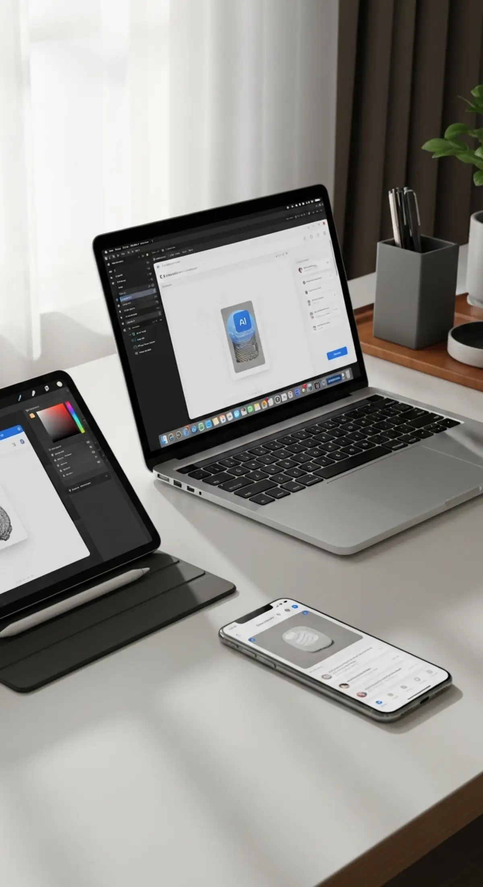

Digital guides and resources
Focused materials designed to improve practical use of AI, workflows and creative tools.
Explore products, tools and curated recommendations designed to improve how you work, create and navigate the digital environment.

This page brings together practical digital products, selected resources and future recommendations that support better workflows and better digital use.
Focused materials designed to improve practical use of AI, workflows and creative tools.
Curated digital tools and platforms that support productivity, creation and online work.
Future affiliate or partner products chosen for usefulness, relevance and practical value.
Productized materials, systems or resources designed to make digital work clearer and easier.
Use this block for your first featured digital product, guide or paid resource.
Use this block for a selected tool, affiliate offer or recommended platform.
The goal of this page is not to list everything. It is to organize products and tools that are relevant to better digital output, better workflows and better online judgment.

If you want context, ideas and practical guidance before selecting products, browse the content section of the portal.